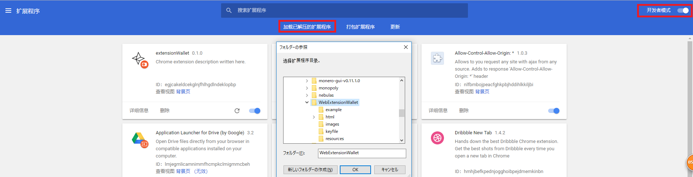
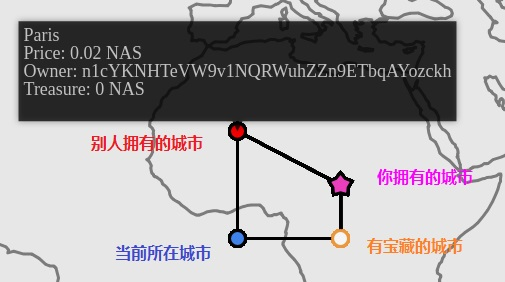
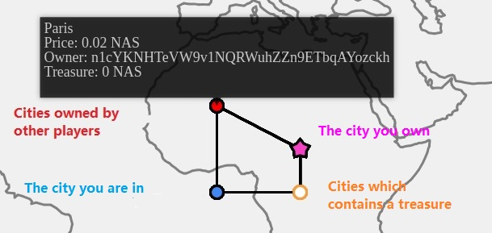

游戏安装说明 (English Below)
- 点击下载星云链的Chrome钱包扩展程序后解压到本地。
- 打开谷歌Chrome浏览器，在地址栏中输入：chrome://extensions/后，如下图开启开发者模式。

- 点击“加载已解压的扩展程序”，找到第一步下载后解压的文件。
- 通过该扩展创建账户。
- 点击免费领取星云链测试网络的NAS。
区块链大富翁游戏规则
- 玩家第一次加入游戏时需要输入账户地址，该地址需要与钱包地址一致。
- 第一次加入游戏时可选择从任意城市出发。
- 每一步仅能移动到与当前城市直接连通的城市，或者自己拥有的城市。
- 如果某个城市已经被其他玩家拥有，需要支付该城市当前价格的百分之一作为过路费才能移动到该城市。过路费将转给城主。
- 到达一个城市后，点击该城市图标，支付当前城市价格后可以拥有它。城市可以被多次购买，其价格在每次购买后翻倍。玩家支付的资金的80%将转给上一任城主。
- 游戏中会随机生成宝藏并放置到一个城市。玩家需要到达该城市后才能领取宝藏。
图例

Blockchain Monopoly Game Rules
Players need to enter their account address the first time they enter the game.
Players can choose wherever to start the first time they enter the game.
Players can move to the cities they own or those which are directly connected to their current city.
If a city is owned by another player, players need to pay the toll which equals 1% of the city's current price in order to move to this city. The toll will be transferred to the city owner.
After players arrive at a city, they can pay the price of the city to buy it by clicking on the city icon. A city can be bought multiple times, and the price of the city will be doubled after each time. Eighty percent of the money paid to buy the city will be transferred to its previous owner.
Treasures will be generated and randomly placed among cities. Players need to reach a city to pick up the treasure in that city.
Legends
